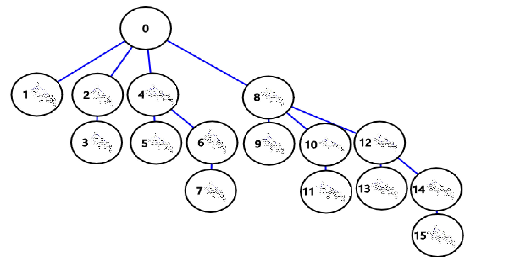
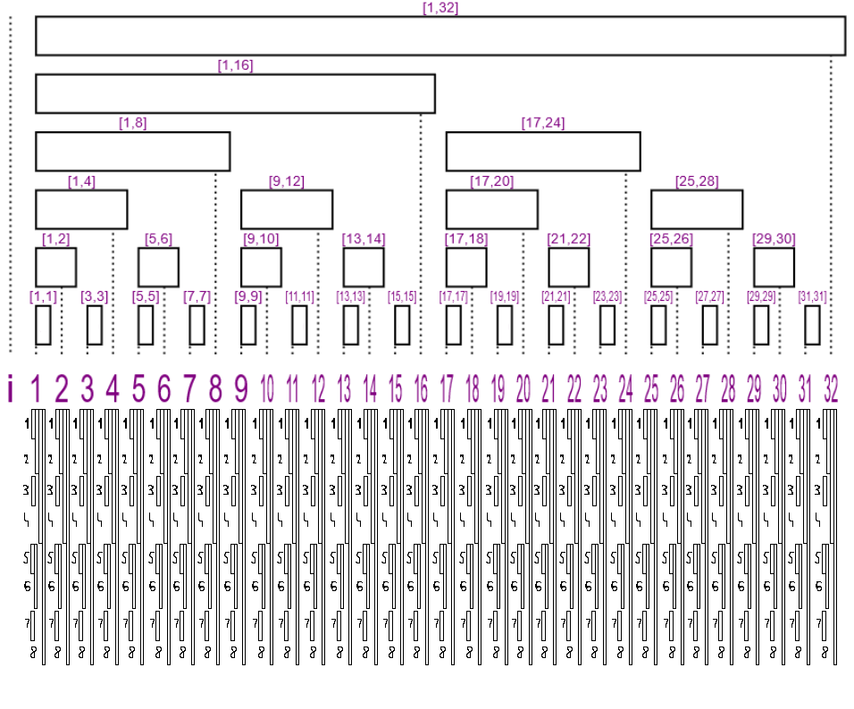
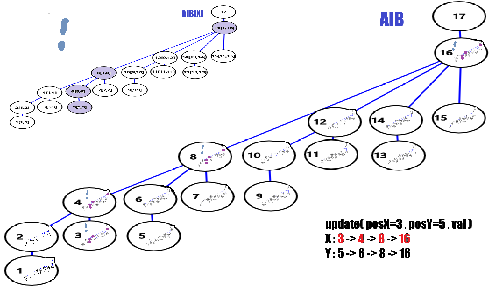
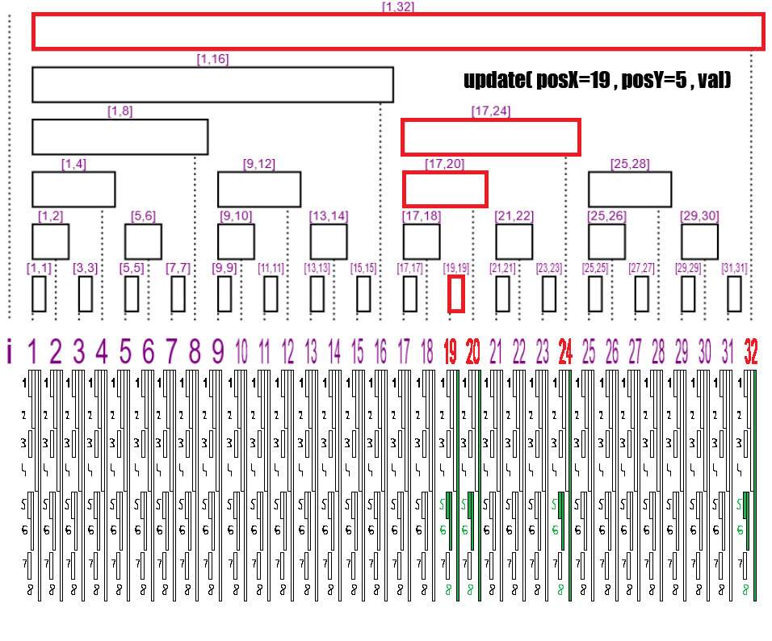
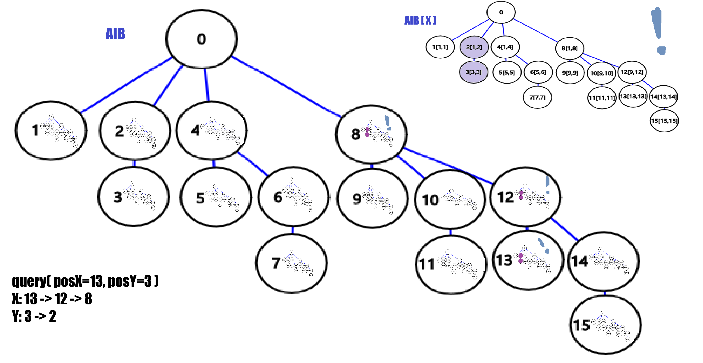
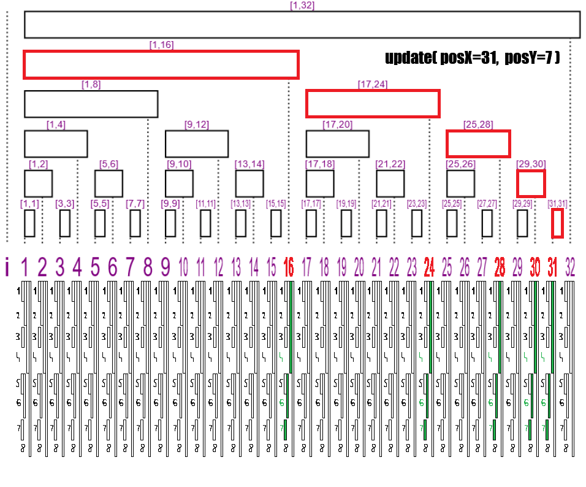
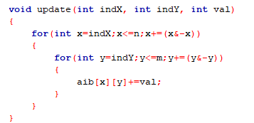
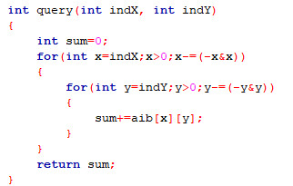

Generalizarea in 2 dimensiuni
Conceptul de arbore indexat binar il putem generaliza pentru tablouri multi-dimensionale. Pentru AIB 2d vom avea urmatoarea problema de rezolvat:
Se da o matrice a (indexata de la 1,1) cu n linii si m coloane, dupa care se dau k operatii care pot fi de 2 feluri:
A) Adauga val la a[posX][posX]; (Actualizare)
B) Afiseaza suma elementelor din matrice din dreptunghiul cu colturile in [1,1] si [posX,posY]; (Interogare)
Complexitatea dorita este O(k*log n * log m), adica O(log n * log m) pentru fiecare operatie.
Noua structura
Tot ce am invatat despre AIB se aplica si aici, daca AIB[x] = Σ(x-(x&-x)+1,x) in mod normal, atunci AIB[x][y] = Σ[(x-(x&-x)+1,y-(y&-y)+1),(x,y)] pentru 2 dimensiuni. Iata cateva exemple:
AIB[3][6] = Σ[(3,5),(3,6)] = a[3][5] + a[3][6];
AIB[1][4] = Σ[(1,1),(1,4)] = a[1][1] + a[1][2] + a[1][3] + a[1][4];
AIB[2][6] = Σ[(1,5),(2,6)] = a[1][5] + a[1][6] + a[2][5] + a[2][6];
AIB[10][20] = Σ[(9,17),(10,20)] = a[9][17] + a[9][18] + a[9][19] + a[9][20] + a[10][17] + a[10][18] + a[10][19] + a[10][20];
Reprezentarea grafica a unui AIB 2d este greu de urmarit, dar ideea din spate este simpla: AIB-ul bidimensional este un AIB care are drept noduri alte AIB-uri. Asadar, nodul x nu va mai avea valoare propriu-zisa, ci un AIB propriu-zis (evident, acest AIB este 1-dimensional).
 |
 |
*Dimensiunea AIB-ului din prima poza este 16x16, iar in a doua poza este 32x8;
*Nu am ilustrat arborele sufix, dar reprezentarea sa este similara cu vizualizarea arborelui prefix;
Noile functii
Functiile de actualizare si interogare 2-dimensionale sunt extensii logice a celor clasice.
Noua functie de actualizare pe sufix
Avand ca input o valoare val si doua pozitii posX si posY, vom actualiza toate nodurile din toate AIB-urile ce contin a[posX][posY]. Aplicam aceeasi operatie repetata x=x+(x&-x) pentru ambii indecsi de data aceasta, creeand sirurile (x)n si (y)n. Vom adaugam val la AIB[xi][yj] pentru oricare i,j astfel incat xi<=n si yj<=m. Am dedus in articolul functiei clasice de actualizare ca exista maxim log n (respectiv log m) indecsi ce respecta conditia, asadar complexitatea finala a noii functii este O(log n * log m).
 |
 |
Testeaza: Daca n = ,
m = ,
posX = ,
posY = ,
vom actualiza AIB[(27,1), (27,2), (27,4), (27,8), (27,16), (27,32), (28,1), (28,2), (28,4), (28,8), (28,16), (28,32)];
*Avand in vedere restrictiile, ati descoperit cel mai lung raspuns posibil, felicitari!
Noua functie de interogare pe prefix
Vrem sa aflam suma din dreptunghiul [(1, 1) , (posX, posY)], unde posX si posY sunt indecsi dati. Aplicam aceeasi aplicatie repetata pentru ambii indecsi de data aceasta, creeand sirurile (x)n si (y)n. Vom culege valoarea din fiecare nod AIB[xi][yj] pentru oricare i,j astfel incat xi>0 si yi>0. Am dedus in articolul functiei de interogare ca exista log n (respectiv log m) indecsi ce respecta conditia, asadar complexitatea finala a noii functii este O(log n * log m).
 |
 |
Testeaza: Σ[(1,1), ( , )] = Σ[(1,1),([11011],[10100]) = AIB[27][20] + AIB[27][16] + AIB[26][20] + AIB[26][16] + AIB[24][20] + AIB[24][16] + AIB[16][20] + AIB[16][16];
Implementarea in C++
 |
 |
Dupa cum puteti vedea, codul este acelasi, dar vom mai adauga o bucla inauntru. Ambele operatii sunt realizate in O(log n * log m), ambele bucle fiind maxim log n respectiv log m.
sau selecteaza-l manual:
void update(int indX, int indY, int val)
{
for(int x=indX;x<=n;x+=(x&-x))
{
for(int y=indY;y<=m;y+=(y&-y))
{
aib[x][y]+=val;
}
}
}
int query(int indX, int indY)
{
int sum=0;
for(int x=indX;x>0;x-=(-x&x))
{
for(int y=indY;y>0;y-=(-y&y))
{
sum+=aib[x][y];
}
}
return sum;
}